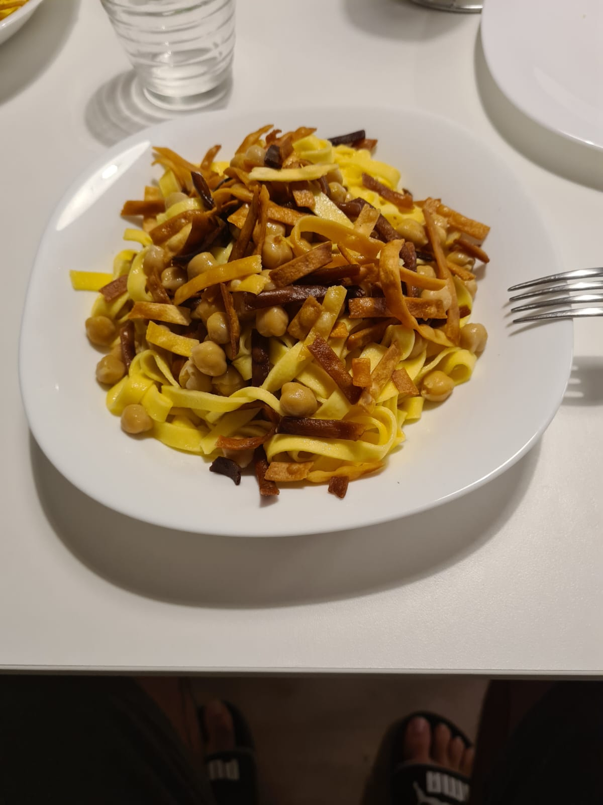

Ciceri e Tria (Puglia, Salento)

Ingredienti
- 150g tagliatelle fresche
- 100g ceci
- 50g cipolla bianca
- 1 spicchio d'aglio
- Peperoncino a piacere
- 250ml olio di semi
- Olio extravergine d'oliva q.b.
- Sale q.b.
Procedimento
- Per comodità usa i ceci in lattina, ma se usi quelli secchi mettili in ammollo in acqua per una notte.
- In una padella fai imbiondire la cipolla e l'aglio in poco olio extravergine d'oliva.
- Aggiungi i ceci e il peperoncino, mescola ogni tanto.
- Accendi l'acqua per cuocere la pasta e contemporaneamente scalda l'olio di semi in un tegame.
- Dividi le tagliatelle in due parti: 100g per la cottura in acqua, 50g da friggere.
- Quando l'olio di semi arriva a circa 170°, friggi le tagliatelle poche per volta finché sono dorate. Scolale su carta assorbente.
- Quando l'acqua bolle, cuoci le tagliatelle fresche (quelle da 100g), che cuociono molto velocemente.
- Scola la pasta e uniscila ai ceci in padella, mescolando bene per amalgamare.
- Impiatta e guarnisci con la pasta fritta sopra.